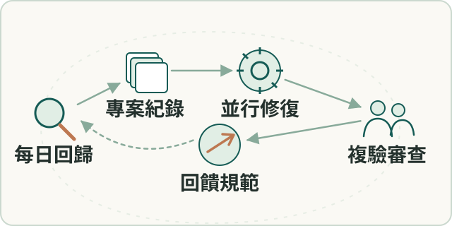

工程實務
可追溯的 AI 協作開發
建立專案與 issue 紀錄架構，連結每日所有功能回歸、並行修復與驗證，以及人工審查與發布決策。
- 我的角色
- 本人建立需求與工具規範、持久上下文、測試及自動修復流程；AI agents 在隔離分支分析、實作、修復和驗證，本人與 reviewer 把關領域判斷、合併及發布。

工作流程示意（點圖放大）要解決的問題
AI 加快實作後，錯誤假設、證據失真及待審分支需可追蹤控制流程。
輸入、處理與產出
- 輸入
- 需求、程式變更、測試與日常回歸產生的問題。
- 處理方式
- 以專案及issue保存狀態和決策，AI在隔離分支並行實作、修復與複驗。
- 產出
- 可審查的變更、驗證紀錄與PR；結果回饋為規則，合併與發布由人判斷。
適用範圍
每日功能回歸不等於已量測百分之百覆蓋率；隔離分支不自動隔離共用服務。
核心問題與我的做法
讓多個AI任務能並行，也能接手與追查
多項開發與修復同時進行，聊天上下文與零散分支不足以保存決策、驗證及待審狀態。
建立專案及issue記錄架構，將持續狀態、當日變化及驗證依據分開。 本人建立環境與接手契約，串接每日所有功能回歸、分支實作及測試、AI協調、領域判斷與人工審查。
讓新功能與維護共用可接續的工作循環：需求、分支、每日回歸、並行修復／驗證及人工發布決策都有紀錄。
驗證要能推翻報告上的成功
自動工作可能有輸出或成功標記，實際卻沒有執行或提交，形式齊全仍可能是假驗證。
將驗證設計為能否證敘述，回到資料庫、產物及當輪執行證據。 本人建立驗證與收線條件；executor執行、supervisor反查，失敗再回寫issue、測試與規則。
結案條件回到當輪執行與原始證據，辨識歷史殘留輸出、未落檔及受阻提交等情況，再回寫 issue 與驗證規則。
成果與驗證
需求、決策、分支、測試及交付狀態可回查；本人確認已用於每日回歸、並行修復與驗證，也支援新功能開發。未量測完整測試覆蓋率、自動修復成功率或效率倍數。
Git worktree · systemd timer · Bitbucket · AI agents